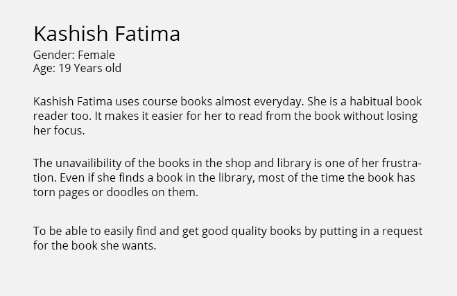
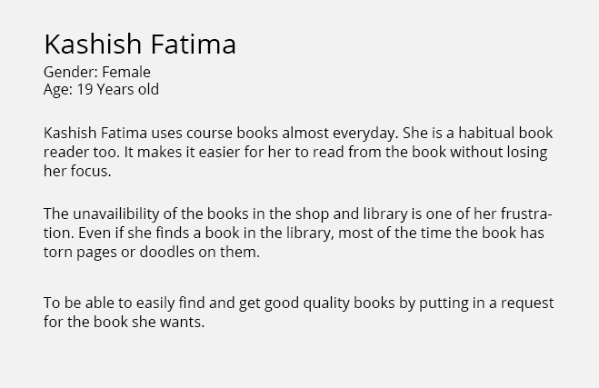
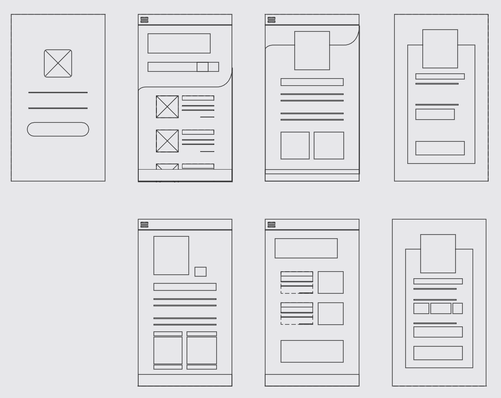

Introduction
Children with Down Syndrome are commonly known for the genetic disorder that is due to the existence of an extra copy of chromosome 21. These children suffer from both medical and physical impairment, however, the degree of impairment may vary for each child.
As a design researcher, my goal was to identify the problems related to educational tools for children with down syndrome and figure out ways to solve them.
Identifying Problems in Current System
The process used a qualitative research method. Therefore, we developed a 19 questions questionnaire, proofread by the research supervisor for authentication, and then taken to the Karachi Down Syndrome Program (KDSP), where we conducted interviews.
Medical Issues
Medical problems associated with Down syndrome can vary widely from child to child. While some kids and teens need a lot of medical attention, others lead healthy lives. Students with Down syndrome may: need to go to the school nurse for medications when necessary, miss class time due to frequent doctor visits.
Additional Assistance
The respondents also reported that children with Down Syndrome need visual and auditory accommodations for classroom instruction, require physical, occupational, and speech therapies, need extra time and assistance with classwork and require therapeutic staff support in the classroom.
Parents' Involvement
According to our research at KDSP, many teacher showed concerns for the lack of parents' involvement in the learning process of their child.
Conducting a Market Research
Key Takeaways (Design Opportunities)
Two major challenges were identified when the students were interviewed about acquiring books from stores and libraries.
Challenge 1: The Unavailability of books
During interviews, we found out that most students were struggling to obtain course material when needed. The other option for the students was to issue the book from the library but they faced the same issue there as well.
"Most of the books are not available in the stores nearby, and you have to go far to buy them."
Challenge 2: The Feeling of being wasteful with money
Upon further inquiry, most of the students in the third and fourth year of their bachelor's program told us that the books they bought in the first year were still with them and that those books were of no use to them and they felt that they wasted their money.
"Many of the course books are expensive. Also, why should we buy books when they are only going to be used for one semester and then kept away."
Outcome of Research
Our interviews with students gave us lots of insights which were organized using an affinity diagram below.

Phase 2 - Converting insights into actions
Creating User Personas
Qualitative User personas were created based on the students we interviewed. These personas represent a group of qualities that proved to be the foundation for our ideation and design phase.
❮
 


❯
Brainstorming and Ideation
Afterward, I held brainstorming sessions and general interviews with the students to gain their insights on what they thought an optimal solution could be. These ideas were then grouped and an optimal solution was selected that would cater to most if not all the problems we have identified.


Phase 3 - Execution
The Architecture
I designed a high-level user flow architecture, covering the basic functionalities of the application.

The Wireframes
Low-fed and Hi-fed wireframes and screen designs of the above-mentioned functions were created in Figma
Solution Overview
Searching

Renting
Buying
Adding